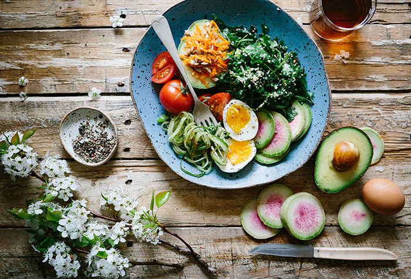

Smart ideas to save money and reach your healthy eating goals.
Grocery bills take up a big chunk of the monthly budget. That chunk can seem even bigger if you're trying to eat healthy. But you don't have to give up your health goals to save money. What you need is a plan.
"There's this myth that healthy eating equals a whole paycheck," says nutrition and cooking coach Libby Mills, R.D., a Philadelphia–based spokesperson for the Academy of Nutrition and Dietetics. "But that's just not true. In fact, today it's easier than ever to shop for and cook the healthiest foods on a tight budget."
Use her strategies to enjoy delicious, healthy foods without breaking the bank.
- Have a budget. "You can't actively try to save money on healthy groceries if you don't have a firm grasp on your food budget," says Mills. So, step one is to know what you can comfortably spend on food each week or month.
- Plan your meals. Sounds obvious, but Mills says most people put very little thought into what they're going to be eating over the next few days. "They get to the grocery store and just start putting food into the cart," she says. Instead, scan your fridge and pantry to see what you have on hand, then plot out your meals.
This will both minimize food waste and keep you from purchasing duplicates. It's also a good idea to check your calendar to see what kind of week you have coming up: "If I have a busy week, I know to shop for one or two big meals that transform into quick, satisfying leftovers," she says. "A less hectic week means I can get more creative." - Look for lean cuts of meat that are on sale. Keep an eye out for grocery store specials on healthier cuts of meat, such as 99 percent fat-free ground turkey, rump roast, chicken breasts, and lean ground beef. "Even if they're not in my weekly meal plan, I'll take advantage of the sale and stash the meat in my freezer," Mills says.
- Buy in bulk or larger containers. Single-serve containers of yogurt might be convenient, for example, but buying the bigger version of nonfat or low-fat plain yogurt is a cost saver and a health saver. "If you're looking for a quick snack to take on-the-go, spoon plain yogurt into your own plastic containers and flavor it with fresh fruit or add savory herbs for a vegetable dip," she says. You'll get all the calcium, protein, and antioxidants without added sugar. The same concept applies to things like cheese (slice and grate your own), nuts, and grains.
- Add veggies to meat dishes. Take your favorite recipes for stir-fries, casseroles, and burgers and cut the amount of meat by swapping in chopped mushrooms, "riced" cauliflower, or sweet potatoes. "You're saving money because that leftover meat can be used in tomorrow night's meal," says Mills. "You're also cutting calories and saturated fat and gaining more fiber and other important nutrients."
- Stock up on beans and legumes. These superfoods are versatile and affordable. "They cost much less than meat and are packed with protein, fiber, and other key nutrients," she says.
- Splurge on whole grains. Whole grains are so important to a healthy diet that Mills says this is the one food item worth spending more on. Unlike their refined counterparts, whole grains are a good source of dietary fiber, which plays a role in heart health and digestive function, and is important for a healthy immune system. "Plus," she says, "whole grains like quinoa, spelt, and bulgur provide a significant amount of protein, so they can replace some of the red meat in our diets."
- Shop the end of the produce aisle. Most grocery stores discount fresh fruit and vegetables that are about to expire and arrange them near the end of the produce section. "That's a great place to look for produce that you're going to cook or stir into oatmeal or yogurt," says Mills.
- Save your produce scraps. Mills turns strawberry tops and apple and citrus peels into flavored waters (let the scraps soak at least one hour; strain before drinking). She also saves onion peels, pepper corns, mushroom stems, and carrot and fennel tops for homemade stocks. "I collect it all in a container that I keep in the back of my fridge," she says. "When it's full, I put everything in a pot, add water, bring it to a boil, and then let it simmer for a few hours."
